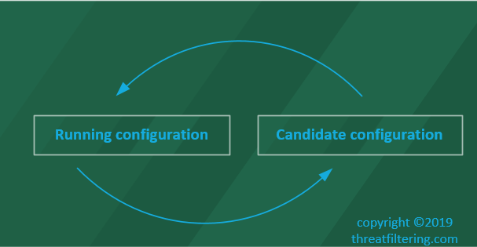
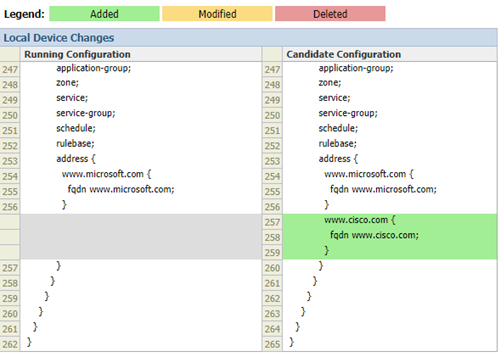
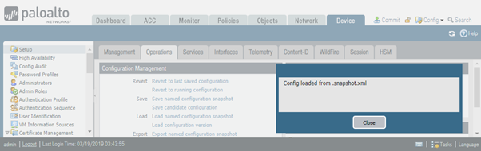

Palo Alto Firewalls Configuration Management
Candidate and Running Config
Palo Alto Firewalls are using commit-based configuration system, where the changes are not applied in the real-time as they are done via WebGUI or CLI. To apply the changes, an administrator needs either to enter commit command in CLI or to press Commit button in WebGUI.
Configuration file is stored in xml format on persistent storage of the firewall. During the boot, it is loaded into memory and becomes running configuration of the device. As different settings of the firewall are applied, such as security policy or system parameter modification – candidate configuration gets changed. It resides in volatile memory and is lost during the system restart.
During the commit operation, the device replaces the running configuration with the candidate config. Previous configuration is automatically archived with a timestamp added to the filename.
How to display running configuration of the firewall via WebGUI? In WebGUI, if the Commit button in the top-right corner is greyed out, then all the settings you see are committed and used as part of the running configuration, or Candidate Configuration == Running Configuration.
If the Commit button is active, then there are some non-applied settings. The next paragraph explains how to display them.
How to preview non-committed changes using WebGUI? Candidate Configuration == Running Configuration + Not-Committed Changes. To see those changes, press Commit and then Preview Changes button.

Enable Pop-Up Windows in your browser to see the configuration difference, as the Preview Changes opens a new browser window. In this example, I have created new address object, which is displayed in green in the Candidate Configuration column.
How to display non-committed changes in CLI? To display non-committed changes use the following command. The example below shows the same FQDN object created earlier and previewed in WebGUI. Statements starting with plus sign are not yet applied to the running configuration.
> show config diff
www.cisco.com {
fqdn www.cisco.com;
}
+ www.google.com {
+ fqdn www.google.com;
+ }
}
import {
network {
How to view candidate configuration in CLI? To see the candidate configuration in CLI, type-in:
> configure
# show
zone {
Untrust {
network {
layer3 ethernet1/1;
}
}
Trust {
network {
layer3 ethernet1/2;
}
}
Dmz {
network {
layer3 ethernet1/3;
}
}
}
This command lists current configuration in the default format.
How to format candidate configuration in the “set” format using CLI? More convenient way of displaying the configuration is in set-format, which can be pasted directly into the device. The output in the previous example, when displayed in set format takes only 3 lines, as shown in the following example. To view it use the following commands:
> set cli config-output-format set
> configure
# show
set zone Untrust network layer3 ethernet1/1
set zone Trust network layer3 ethernet1/2
set zone Dmz network layer3 ethernet1/3
Working with Configuration in PAN-OS
The next few examples will be focusing on how to use Configuration Management in PAN-OS using WebGUI. To access Configuration Management menu navigate to Device > Setup > Operations.
Configuration Management – Internal to Firewall
First 3 groups of commands work together to save and load configuration state checkpoints within the firewall. Load and Revert options use snapshots created by Save and Commit operations. How these options are related is shown in the screenshot below.
First two operations that can be performed are revert-related. What is the difference reverting to:
- Running configuration
- Last saved configuration
As shown in the diagram below, revert to running configuration removes all unapplied changes and in the diagram below both Change #1 and Change #2 will be discarded.
If there was a candidate configuration save done between Change #1 and Change #2, then revert to last saved configuration will remove only Change #2. If there have been no candidate configuration saves, then it will revert back to the running configuration.
Let’s start with the newly deployed VM-series PA with no changes yet applied. As a test, we will create a test FQDN address object – www.microsoft.com.
Commit button is now active due to this change. Revert to last saved configuration will fail, as we haven’t saved any configuration (and no changes have been committed) just yet.
Let’s commit the change and add the second FQDN – www.cisco.com.
Now let’s try to revert to last saved configuration again, this time there is no error.
Notice that the second FQDN (www.cisco.com) now has gone.
Adding www.cisco.com back and pressing “Revert to running configuration” button has the same result, i.e. the newly address is being removed.
The next two options in Configuration Management are Save-related:
- Named configuration snapshot
- Candidate configuration
What Save named configuration snapshot option does? This option saves candidate configuration to persistent storage and as result will be available even after firewall reboot. It is convenient, when you want prepare the change, but apply it later. Note that in this scenario, care should be taken, as if there will be other changes done between preparation and applying these changes will be overwritten.
I’ve added www.cisco.com FQDN address object back and pressed “Save named configuration snapshot” button. I’ve assigned “cisco-added” name to the snapshot and pressed OK.
By pressing Commit button and previewing changes, we can see that save snapshot doesn’t automatically commit the change.
To see the list of saved snapshots in WebGUI click on Load named configuration snapshot link in Configuration Management page, which will display available checkpoints.
After device restart, the named snapshot is still available. CLI command to display list of saved configuration files is:
> show config saved
candidate-config candidate-config
cisco-added 2019/03/19 03:28:10 9.2K
running-config.xml 2019/03/19 03:40:36 9.1K
<value> Saved configuration
What Save candidate configuration option does? This option provides ability to save a single snapshot of candidate configuration into RAM. It is similar to Undo command in Windows Notepad (with only single last action rollback). Use cases for this command is when you create a complex change and want to be able to go back to a previous version of non-applied config.
To demonstrate how it works, two changes will be created with save in between. I will start with adding new FQDN object – www.fortinet.com.
Then let’s press save candidate configuration link. Important to note that this command doesn’t commit the change.
Let’s now add another FQDN object – www.google.com.
To test the behaviour I pressed Revert to last saved configuration.
As the result of this action, the second change object has now gone.
What does Load configuration version link do? This option provides automatic rollback to previously auto-saved configuration. Each commit generates a new version of the configuration. This is very convenient feature in situations when you need to perform a rollback of a commit.
As shown in the screenshot below, the more recent configuration versions are placed on the top.
Configuration Management – External to Firewall
The last 2 group of commands allow configuration files to be transferred between the firewall and administrator PC.
As shown in the screenshot below, there are 5 commands available under Export and Import sections.

Export provides the way to extract information from the firewall. First option, “Export named configuration snapshot” allows downloading of candidate and running config, as well as snapshots you create using “Save named configuration snapshot” option. The next screenshot shows available options. Downloaded file is in XML format and can be imported (or uploaded) using “Import named configuration snapshot” link.
The second option, “Export configuration version” extracts the selected auto-saved configuration, as shown in the screenshot below. It can be useful for off-the box archival purposes.
“Export device state” exports not only configuration, but also dynamic information for GlobalProtect Portal with large scale VPN feature. The file is an archive (tgz).
Does configuration export contain certificate, private keys and pre-shared keys? Yes. You can use restored keys and certificates, however, they cannot be displayed in clear-text.
Is it possible to restore configuration on another device? Yes. The configuration is not automatically committed, so there is an option to edit configuration prior to applying it to the firewall.